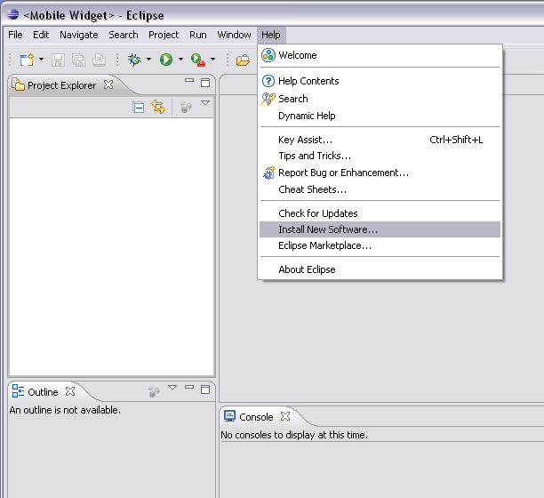
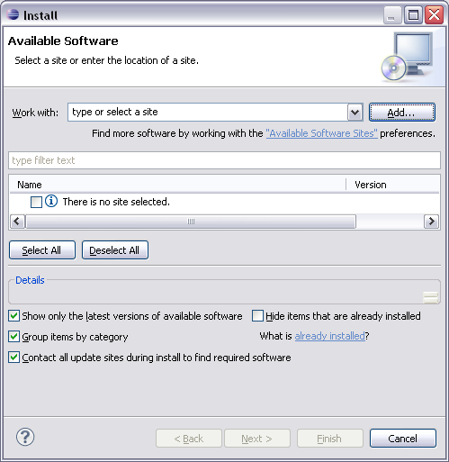
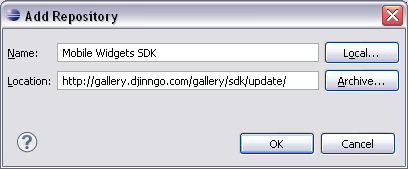

Before you install the plug-in, make sure that your development environment fits the following requirements:
This section contains informations to install Mobile Widgets plugin for Eclipse.
This Plugin add VRML syntaxic coloration and "automatic formating" in Eclipse.
Warning:
Uninstall Djinngo SDK if any conflict occurs during installation.

From eclipse folder, launch " eclipse.exe " file to open Eclipse.
" <Mobile Widget> - Eclipse " window is opened.
In options, select " Help " then " Install New Software... " to access to Install.

" Install - Available Software " dialog box is opened.
Select " Add... " button, to add a remote site.

" Add Repository " dialog box is opened.
Complete informations about update site:
Click on OK button.
" Add Repository " dialog box is closed.
" Install - Available Software " dialog box is displayed with " Work with: " completed by " Mobile Widgets SDK - http://gallery.djinngo.com/gallery/sdk/update/ " .
Open " Mobile Widgets SDK " folder.
Select " Select All" button. All the " Mobile Widgets SDK " folder is checked.
Check " Contact all update sites during install to find required software".
Select " Next > " button to launch installation.
During installation, " Security Warning " pop up is displayed.
Click on " OK " button to accept the unsigned content to continue installation.
At the end of installation, " Software Updates " dialog box is displayed.
Eclipse needs to be reboot to complete installation.
Select " Restart Now " button to reboot Eclipse.
After reboot, Eclipse is restarted. Mobile Widgets SDK installation is finished.
Congratulations! You can now build your own widgets.